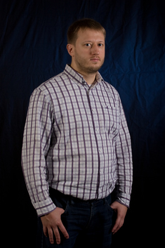

Должность
Разработчик ПО / Системный программист / IT-специалист. Марсель, Франция.
Специализация: Си/Си++ и Питон
Опыт работы: более 25 лет разработки ПО
С 2013 года я работаю разработчиком программного обеспечения в Марселе, Франция (CET), и имею французское гражданство.
С 2023 года я работаю независимым консультантом через мою французскую фирму EURL (ООО с единственным участником), предоставляя услуги по разработке программного
обеспечения и консалтингу клиентам из различных отраслей:
https://annuaire-entreprises.data.gouv.fr/entreprise/dementyev-eurl-949580476
У меня большой опыт сотрудничества с международными клиентами и командами в разных часовых поясах, и я предлагаю гибкий график для обеспечения бесперебойного международного сотрудничества.
Опытный пользователь Linux с 2000 года, специализация на Gentoo с 2004 года.
Биография / Контактная информация
Полное имя: Максим Петрович Дементьев (латиницей: Maxim Dementyev, также Dementiev)
Телефон: +33 6 67 77 40 61 (мобильный)
E-mail: dememax@hotmail.com
Telegram: @dememax Skype: mdementiev
Образование: 1992 - 1997 - Московский Государственный Строительный Университет (https://mgsu.ru/, бывший МИСИ), кафедра "Автоматизированные Системы Управления" (АСУ) факультета "Экономики, Организации и Управления Строительством" (ЭОУС), диплом Инженер-Системотехник (2202)
Языки: русский (родной), английский, французский
Профили:
 | GitHub dememax | FreeDesktop GitLab dememax |
SourceForge maximdementiev
| GitHub dememax | FreeDesktop GitLab dememax |
SourceForge maximdementiev
Перечень навыков
Языки программирования: С/С++, Питон, Bash, Ява, SQL, JavaScript, Бейсик, Паскаль
Операционные системы: Linux (Gentoo, OpenWRT, Debian, ...), FreeBSD, SunOS, MS Windows, Symbian
Автоматизация сборки и системы управления пакетами: make, CMake, GNU Autotools, Meson, Cerbero, Buildroot, Portage, dpkg / apt
Инструменты: Си/Си++ компиляторы, инструменты и IDE (GNU, Microsoft, Sun, IBM, Borland, ...), отладка/профилирование (GDB, Valgrind, Purify), офисные программы (OpenOffice, MS Office including MS Project, ..), unix shell (grep, find, ...), генераторы документации (Doxygen, Sphinx, ...)
Version control systems: Subversion, GIT, CVS, ...
Базы данных: SQLite, PostgreSQL, MySQL, ...
API, библиотеки, SDK: STL, ANSI C/POSIX API, libpcap, CppUnit, GStreamer, FUSE, SWIG, CGI/FastCGI, ZooKeeper, MS Win32 API, WTL, GTK
Стандарты, White papers: ANSI/ISO C++, POSIX (threads, sockets, ...), 802.11 (Wi-Fi) / Radiotap, RFCs (network protocols, formants, ..), W3C (HTML, CSS, XML, ...), Java Lang Spec, ANSI SQL, UML
Технологии, Методологии: объектно-ориентированный дизайн/программирование, шаблоны проектирования (GoF, ...), разработка и реализация распределённых многозвенных и многонитевых клиент-серверных проектов, Веб/Интернет, тестирование (нагрузочное и производительности, стресс-тестирование, гарантия качества)
Электронные рынки: Книга ордеров, ордера, котировки, ценные бумаги, деривативы, API (FIX, OM-Click, Eurex, SWX, Fidessa EMMA, ...)
Опыт работы
Май 2025 - октябрь 2026
Компания: NexVision (https://nexvision.fr/), Марсель, Франция
Должность: Старший разработчик ПО, независимый консультант через Dementyev EURL (полная занятость, в офисе заказчика)
Проекты, продукты: Proreus — встраиваемая система обнаружения объектов в реальном времени (камеры видимого и теплового инфракрасного диапазонов, модули NVIDIA Jetson Orin), помогающая экипажу судна избегать столкновений с крупными морскими млекопитающими и другими препятствиями. Смежный продукт: eMAS, бортовая система обнаружения китообразных компании NexVision.
Роль: Основной разработчик операторской панели системы (Proreus GUI) и ответственный за её выпуски — от прототипа до промышленной эксплуатации. В зоне ответственности: архитектура интерфейса, серверная часть на C++, браузерная панель, симулятор сенсорной подсистемы, автоматическое тестирование, техническая документация, управление версиями и поставка.
Основные обязанности и достижения:
- Разработка сервиса на C++23 для платформы Yocto Linux на базе NVIDIA Jetson Orin, поставляемого в виде RPM-пакета (57 выпущенных версий, теги Git); реализация JPEG-кодирования через GStreamer с аппаратным ускорением на Jetson и переносимостью на машину разработчика, а также исправление дефектов во внутренней C++-библиотеке HTTP/WebSocket.
- Создание операторской консоли реального времени, превращающей поток объединённых данных датчиков (20 Гц, MQTT) в тактическую картину для принятия решений: видео с камер в реальном времени, наложение обнаружений и треков, метрический радар, воспроизведение вырезок обнаруженных объектов и немедленная индикация деградации датчиков. В основе — ориентация, заданная кватернионами, и репроекция на изображение камеры с коррекцией оптической дисторсии.
- Миграция с ретранслятора WebSocket на C++ на прямой приём данных браузером по MQTT поверх WebSocket с удалением из сервиса слоя ретрансляции, кольцевого буфера и собственного протокола кадрирования; замена C++-симулятора для тестирования детерминированным Python-симулятором всей цепочки восприятия с задаваемым начальным значением (seed), а также расширение матрицы проверок до 1 616 прогонов тестов на каждый выпуск (несколько браузеров, нагрузочные тесты, санитайзеры, Valgrind).
- Устранение задержки отображения, проявлявшейся в полевых условиях при насыщенной обстановке: за неделю созданы наборы нагрузочных тестов и переработана обработка снимков обстановки (линейный поиск, дававший сложность O(n²), заменён индексом треков с доступом за O(1)), что сократило максимальное время стабилизации с 402 с до 22 с.
- Адаптация репозитория к разработке с ИИ-агентами (Claude Code, Codex): явный контракт для агентов (строгий TDD с раздельными коммитами RED/GREEN, проверка того, что каждый assert действительно падает без исправления), стандарты кода, журнал архитектурных решений (ADR), детерминированные точки наблюдения для тестов и два инструмента контроля с открытым исходным кодом, автором которых я являюсь (check_rst, check_formatting).
Инструменты, языки и SDK: C++23, Python (pytest, paho-mqtt, Playwright), GCC, Meson, GStreamer, Yocto, NVIDIA Jetson Orin, MQTT (Mosquitto), JavaScript (VanJS, HTML5 Canvas), ASan/UBSan/Valgrind, clang-tidy, Ruff, mypy, Sphinx/reStructuredText, Git, GitLab, Claude Code и Codex
Март 2023 - Сентябрь 2024
Компания: Fluendo (https://www.fluendo.com/), Барселона, Испания
Должность: Ведущий разработчик ПО (полная занятость, удалённо)
Проекты, продукты: Fluendo Codec Pack, GStreamer, Cerbero
Роль: Разработка и поддержка компонентов GStreamer и Cerbero в распределенной команде по всей Европе в полностью удаленной среде с использованием GitHub, Slack, Jira, сервисов Google и т. д.
Основные обязанности и достижения:
- Разработка, выполнение код-ревью, рефакторинг, поддержка, тестирование и поставка плагинов Fluendo GStreamer.
- Регулярно участвовал в проектах с открытым исходным кодом, включая GStreamer и Cerbero.
- Способствовал эффективному общению и передаче знаний, активно участвуя в обсуждениях с разработчиками, предоставляя операционную поддержку и создавая исчерпывающую документацию для разработанных компонентов.
- Реализовал многоуровневую систему ведения логирования, которая предоставляет подробные пошаговые сведения, значительно улучшая устранение неполадок и разрешение сбоев регистрации и инициализации в сложных средах.
- Внес вклад в пакет кодеков компании, разработав и документировав компонент кодера H.265 для API NVIDIA, который стал эталонным проектом для нового процесса разработки кодеков.
- Я участвовал в переходе от устаревшего CI (Jenkins) к интегрированному GitHub Actions workflow.
Инструменты, языки и SDK: C/C++, Python, GStreamer, Cerbero, Meson, Docker, GitHub Actions, Slack, Jira
Март 2020 - Январь 2023
Компания: Kalyzée (https://www.kalyzee.com/), Марсель, Франция
Должность: Разработчик ПО (полная занятость, частично удалённо)
Проекты, продукты: Kast Revolt - Камера с возможностью записи и он-лайн вещания с удалённым управлением
Роль: Разработка и поддержка ПО камеры.
Основные обязанности и достижения:
- Разработка, тестирование и выпуск обновлений программного обеспечения камеры.
- Повышение надежности камеры за счет устранения критических утечек памяти и оптимизации прошивки, что привело к непрерывной, стабильной работе, устранению прежней необходимости перезагрузки каждые 2-3 дня.
- Реализована четкая схема управления версиями для выпусков, встроена полная информация о версии в метаданные камеры для улучшения протоколирования.
- Удаленный анализ и обновление прошивки клиентской камеры через VPN.
- Оптимизирован код OpenGL для улучшения FPS и качества записи/трансляции для локальных записей HD и прямых RTMP-трансляций на такие платформы, как YouTube.
- Разработан надежный метод воспроизведения для выявления критических, неочевидных дефектов оборудования, предотвращения потенциальных сбоев на стороне клиента и предоставления неопровержимых доказательств производителю.
Инструменты, языки и SDK: C/C++, Java, Python, AOSP & Android NDK, GStreamer, Cerbero, Docker, EGL / OpenGL ES
Февраль 2018 - Март 2020
Компания: SuperSonic Imagine (https://www.supersonicimagine.fr/), Экс-ан-Прованс, Франция
Должность: Разработчик ПО (полная занятость, частично удалённо)
Проекты, продукты: Система обновления пакетов на основе Debian. Компоненты ПО УЗИ.
Роль: Разработчик компонентов для ПО УЗИ.
Основные обязанности и достижения:
- Поддержка инфраструктуры для обновления ПО УЗИ.
- Разработка и внедрение компонентов программного обеспечения для медицинского УЗИ.
- Улучшен пользовательский интерфейс для обновлений системы за счет внедрения настраиваемого уровня уведомлений, который интегрируется с собственными уведомлениями рабочего стола.
- Улучшен процесс запуска и инициализации системы в два раза за счет объединения сложных межпроцессных коммуникаций — ранее включавших большое приложение C++, скрипты Python, скрипты оболочки и другие процессы — в автономную процедуру C++ в основном приложении. Эта оптимизация устранила дублирование кода с помощью структурированной иерархии классов, обеспечила надежную обработку ошибок с помощью проверок статуса возврата с ведением журнала и включила тесное сотрудничество с инженерами по оборудованию для проверки инициализации оборудования, что привело к уменьшению занимаемой площади, меньшему количеству переключений контекста и значительному повышению производительности.
- Создана оболочка Python с использованием инструмента SWIG для автоматизации операций c системой УЗИ.
- Автоматизированная генерация полной документации для внутреннего конечного автомата с использованием инструмента Sphinx, включая графики, категории, перекрестные ссылки и сводки.
Инструменты, языки и SDK: C/C++, Python, SWIG, PHP, Linux, apt/dpkg, GNU Toolhcain (GCC, Make, Autotools, GDB), Gitlab, Jira
Сентябрь 2014 - январь 2018
Компания: NexVision (https://nexvision.fr/), Марсель, Франция
Должность: Разработчик ПО (полная занятость, в офисе)
Проекты, продукты: Система видеонаблюдения установленная в салоне Airbus A380.
Роль: Разработчик компонентов для встроенной камеры.
Обязанности: Поддержка набора linux-драйверов для TI DM365 Front End. Разработка и поддержка компонентов GStreamer.
Инструменты, языки и SDK: C/C++, Linux, GStreamer, LIVE555, Buildroot, GNU Toolhcain (GCC, Make, Autotools, GDB), U-Boot, Redmine, Git, Gerrit
Август 2013 - сентябрь 2014
Компания: Wyplay (https://www.wyplay.com/), Аллош, Франция
Должность: Разработчик ПО (полная занятость, в офисе)
Проекты, продукты: IPTV для Belgacom TV STB. Связующее ПО для IPTV на архитектуре Broadcom BMIPS5000.
Роль: Разработчик связующих компонентов.
Обязанности: Реализация нового функционала. Исправление ошибок и тестирование.
Инструменты, языки и SDK: C/C++, Python, Linux, Gentoo Portage, GNU Toolhcain (GCC, Make, Autotools, GDB), Redmine, CppUnit, Mercurial
Предыдущий опыт
С 1988 по 2013 год я накопил обширный опыт в разработке программного обеспечения для различных отраслей и технологий. Мой путь начался с программирования в школе, затем параллельно с учёбой я работал в таких компаниях, как Norma-Nefto, Atlant-Inform и R-Style Software Lab. Я оттачивал свои навыки в таких организациях, как Inforser, RTComm.RU и E.Soft, работая над различными проектами, включая системы управления контентом, приложения для баз данных и веб-разработку.
В 2000-х годах я занял более высокие должности, в частности в Deutsche Bank и Renaissance Capital, где я разрабатывал промежуточное программное обеспечение для электронных бирж и компонентов связи в международной среде с командами по всему миру. Моей последней должностью до 2014 года была Ashmanov&Partners, где я работал старшим разработчиком над проектами по веб-фильтрации и классификации контента.
На протяжении всего этого периода я последовательно расширял свои познания в C/C++, Python, Java и различных технологиях баз данных, одновременно адаптируясь к развивающимся средам разработки и инструментам в системах Windows, Linux и Unix.
Июнь 2010 - по июль 2013
Компания: Ашманов и партнеры (https://www.ashmanov.com/), Москва, Россия
Должность: Ведущий разработчик ПО
Проекты, продукты: Веб-фильтр. Компоненты для классификации содержимого. Ключевые слова. Классификация ссылок и IP-адресов. Компоненты расписания. Интеграция компонентов в язык правил. Преобразование HTML и Shockwave Flash в текстовый формат.
Роль: Разработчик компонентов веб-фильтра.
Обязанности: Дизайн и реализация компонентов и оболочек, написание кода и юнит-тестов, документации. Профилирование и тестирование.
Инструменты, языки и SDK: C/C++, Python, Linux, FreeBSD, GNU Toolhcain (GCC, Make, Autotools, GDB), Trac, CppUnit, SVN, CVS, "Семантическое зеркало"
С августа 2008 года по май 2010 года
Компания: Mail.Ru (http://mail.ru/), Москва, Россия
Должность: Разработчик ПО.
Проекты, продукты: Распределенное файловое хранилище (сервер мета-данных, сервер именования, клиентская библиотека, механизмы консолидации и осуществления снимков данных), хранилище почты, интерфейс доступа к почте (клиентские и серверные сетевые библиотеки).
Роль: Разработчик компонентов распределенного хранилища, сопровождающий почтового хранилища и библиотек доступа к нему.
Обязанности: Разработка концепции. Реализация в коде и тестах. Тестирование.
Инструменты, языки и SDK: C/C++, Linux, FreeBSD, GNU Toolhcain (GCC, Make, Autotools, GDB), Zookeeper, SVN, CVS
С апреля 2008 года по август 2008 года
Компания: Renaissance Capital (http://www.rencap.com/), Москва, Россия
Должность: Ведущий разработчик.
Проекты, продукты: FIX and Market Connectivity (MICEX, RTS, LSE, FIX, Reuters, UL Bridge).
Роль: Ответственный за развитие промежуточных компонентов системы для связи с биржами и клиентами с использованием различных протоколов.
Обязанности: Ведение проектной документации. Планирование, согласование и учёт работ по разработке и внедрению компонентов системы. Разработка и представление новых предложений. Участие в рабочих совещаниях.
Инструменты, языки и SDK: MS Visual Studio, CMake, C/C++, Java, Tibco RV, UL Bridge
С декабря 2005 года по апрель 2008 года
Компания: Дойче Банк (http://www.db.com/), Москва, Россия
Должность: Investment Banking IT-специалист, Associate
Проекты, продукты: Промежуточное ПО для абстрагирования доступа к электронным биржам (SWX, Eurex, SIBE, OM-Click, FIX) и фидам (Reuters), трейд-фиды
Роль: Развитие существующей кодовой базы и компонентов, поддержка, разработка модулей доступа к новым рынкам
Обязанности: Написание кода, исправление ошибок, разработка новых компонент, поддержка, консультирование
Инструменты, языки и SDK: C/C++, Java, GCC, SUN Studio, Linux, Solaris, CVS, SourceForge, CppUnit, Doxygen, FIX, XML, ORC
С июня 2003 года по ноябрь 2005 года
Компания: Intersoft Lab (http://www.iso.ru/), Москва, Россия, Contour Components Ltd (http://www.contourcomponents.com/), Москва, Россия
Должность: Программист.
Проекты, продукты: VCL-компоненты, Python Forms Designer, XML Dataset, OLAP Cube (VCL, ActiveX)
Роль: Развитие существующей кодовой базы и компонентов, поддержка
Обязанности: Написание кода, исправление ошибок, разработка новых компонент, питоновские обёртки C/C++ кода с помощью SWIGа
Инструменты, языки и SDK: Borland C/C++ compiler, VCL, Python, Bison, Expat, SWIG, PVCS, CppUnit, Scintilla
С января 2001 года по май 2003 года
Компания: E.Soft (http://www.e-soft.ru/), Москва, Россия
Должность: Системный программист, Консультант, Руководитель проекта.
Проекты, продукты: Программа управления контентом сайта, система ведения прайс-листа фирмы Inforser (2-я версия), Постман, Resolver, etc.
Роль: Консультант по решению нестандартных проблем, разработчик и реализатор разного рода проектов
Обязанности: Изучение и проверка новых технологий, консультации (языки программирования, инструменты, технологии), поиск решения нестандартных проблем, составление технических требований, составление планов проектов, разработка пользовательского интерфейса, разработка схем баз данных, написание кода на языках JavaScript, Java, C/C++ и SQL
Инструменты, языки и SDK: C/C++ компиляторы (GCC, MSVC), Java 1.1-1.2, JavaScript, HTML, DBMS (MySQL, MS SQL Server), Unix-среда (Linux, FreeBSD, SunOS), shell (bash), Internet-протоколы (HTTP, FTP, SMTP, ...), MS Win32 API, WTL, Posix (нити, сокеты, ...)
С апреля 2000 года по январь 2001 года
Компания: РТКомм.РУ (http://www.rtcomm.ru/), Москва, Россия
Должность: Старший программист, Руководитель проекта
Проекты, продукты: Spider, Service Monitor, предварительная биллинговая системаб, генератор RTF, SMS рассылщик
Роль: Разработчик, Консультант, Поддержка
Обязанности: Разработка и реализация проектов, консультации по системному программированию, поддержка (исправление ошибок, добавление новых свойств)
Инструменты, языки и SDK: C/C++, Java, unix shell, DBMS, Web-protocols, Windows, Linux, SunOS
С января 2000 года по апрель 2000 года
Компания: DGroup (http://www.dgroup.ru/), Москва, Россия
Должность: Java Программист, Консультант
Проекты: WWW site Krasota-on-line (http://podbor.krasota.ru/)
Роль: Разработка и реализация java-апплетов, Консультант
Обязанности: Разработка апплетов и HTML-страниц, JavaScript-апплеты программирование, реализация апплетов и структур данных, консультирование
Инструменты, языки и SDK: JDK 1.1, Веб-броузеры, Apache, MySQL, HTML, JavaScript
С октября 1999 года по январь 2000 года
Компания: Ulter-West (http://www.uw.ru/), Москва, Россия
Должность: Программист
Проекты: Ulter-Shop, Веб-сайт, Постман
Роль: Разработчик internet-магазина Ulter-Shop, поддержка веб-сайта, консультации
Обязанности: составление HTML-страниц, реализация Java GUI-компонентов, реализация серверных компонентов, консультации
Инструменты, языки и SDK: JDK 1.1, JDK 1.2, Inprise JBuilder 3.0, JavaMail 1.1.2 (MIME), XML, DOM, JavaServlets, Apache, PostgreSQL
С сентября 1999 по март 2000 года
Компания: Инфорсер (http://www.inforser.ru/), Москва, Россия
Должность: Разработчик, Консультант
Проекты: Система ведения прайс-листов фирмы Inforser
Роль: Разработка и реализация системы ведения прайс-листов, консультации
Обязанности: разработка форм и отчётов, разработка схемы базы данных, написание кода, поддержка, взаимодействие с MySQL и FreeBSD
Инструменты, языки и SDK: MS Access 97, MS Visual Basic, компоненты и инструменты MS Office, MySQL, MySQL ODBC драйвер, telnet
С августа 1997 года по май 1999 года
Компания: R-Style Software Lab (http://www.softlab.ru/), Москва, Россия
Должность: Программист, затем Старший программист, Руководитель проекта
Проекты: Централизованное хранилище документов, Классификаторы.
Роль: Руководство и разработка клиент-серверных Win32 приложений, с использованием баз данных, Microsoft RPC и COM, для бухгалтерских систем.
Обязанности: Разработка концепции приложений, разработка схемы базы данных приложений, разработка интерфейсов RPC-сервера, дизайн клиентского пользовательского интерфейса, создание технической документации и спецификаций, создание и разработка серверных компонентов и библиотек
Инструменты, языки и SDK: Borland C++ v 5.01, Microsoft RPC, COM, OLE, Win32 API, Visual RSL, RDB Btrieve v.6.15 - Pervasive SQL 7.0, ER-Win 2.5-2.6, MS Office 97 (включая Project 98), Visual Source Safe 4/5/6.0, PVCS Tracker 4.0-5.0
С мая 1996 по май 1997 года
Компания: Atlant-Inform (http://www.atlant-inform.ru/), Москва, Россия
Должность: Программист
Проекты: Среда разработки Ace, затем версия под MS Windows
Роль: Разработчик среды Ace
Обязанности: написание кода, исправление и тестирование
Инструменты, языки и SDK: Borland Turbo Pascal for MS DOS, Delphi, SQL, IDE Ace, Watcom C++, Microsoft Win32 API
С 1993 года по апрель 1996 года
Учреждение: Норма-Нефто, Москва, Россия
Должность: Программист
Роль: Разработка и реализация приложений баз данных
Обязанности: написание кода, поддержка баз данных
Инструменты, языки и SDK: Assembler x86, BIOS and DOS API, MS MASM 5.0, FoxPro 2.0-2.6 for DOS, MS FoxPro 3.0 for Windows
С 1988 года по 1992 год
Учреждение: Школа, Москва, Россия
Инструменты, языки и SDK: Assembler PDP-11, Basic, Pascal
Хобби и интересы
Семья, иностранные языки (английский и французский), фильмы, бальные танцы, юмор (Михаил Жванецкий, Not Only... But Also, Les Inconnus, ...), мой блог, Википедия (чтение, исправления) и SourceForge.